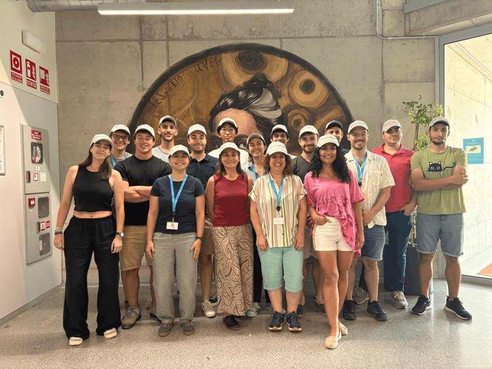

Talks & teaching
Conferences, courses and the longTREC doctoral network. Research is
done with other people, so this page is mostly other people.

2026
VALT Summer Course, València
Three days of hands-on long-read analysis at I2SysBio, June 2026.
1 of 3
Conferences
2026
AI-assisted improvements in code efficiency and sustainability
Invited workshop
SEBiBC 2026, Toledo, 11–13 November — upcoming
2026
SQANTI-epi: quality control and benchmarking for single-molecule chromatin
Abstract submitted, decision pending
LRUA26, Uppsala, 2–4 November — upcoming
2026
SQANTI-epi: QC, benchmarking and regulatory-element calling
Abstract submitted, decision pending
CSH Asia Genome Biology, Suzhou, 12–16 October — upcoming
2026
SQANTI-epi: functional and quality annotation of single-molecule epigenomic data
Talk, HiTSeq track
ISMB 2026, Washington DC, 14 July
2026
SQANTI-epi: linking chromatin state to isoform regulation
Talk
VALT Symposium, València, 29 June
2025
TUSCO: a framework for evaluating transcriptome reconstruction quality
Poster
JBI 2025, Madrid, October
2025
TUSCO: benchmarking transcriptome reconstruction
Short talk, iRNA track
ISMB/ECCB 2025, Liverpool, 20–24 July
2024
BUGSI: a framework for evaluating transcriptome quality
Poster · speaker and coordinator, longTREC workshop on long-read transcriptomics
LRUA24 — Long-Read Sequencing Uppsala, 21–23 October
2024
BUGSI: benchmarking universal genes with single isoforms
Poster and flash talk
1st SEBiBC Congress, 16–18 October
2024
SQANTI-SIM: controlled transcript novelty for lrRNA-seq benchmarking
Poster
ECCB 2024, Turku, 16–20 September
2022
PaintOmics 4: integrative multi-omics analysis across pathway databases
Poster
ECCB 2022, Sitges, 18–21 September
Teaching and supervision
2026
Hands-on AI agents workshop for the institute
Co-instructor
I2SysBio, València, 28 July
2026
VALT Summer Course in Long-read Bioinformatics
Instructor — QC metrics, read mapping, SQANTI-reads
I2SysBio, València, 25–27 June
2026
MSc thesis internship: AlphaFold modelling of novel long-read transcripts
Day-to-day supervisor
ISCIII bioinformatics master, hosted at I2SysBio
2025
longTREC Bioinformatics Summer School
Instructor — long-read mappers and QC with SQANTI-reads
Earlham Institute, Norwich, 14–17 July
2024–25
BSc thesis: biological replicates in SQANTI-SIM
Co-supervisor
Universidad Politécnica de Madrid, hosted at I2SysBio
longTREC
2026
longTREC closing meeting
Participant — mini-grant proposal
I2SysBio, València, 2–3 July
2025
longTREC Mid-term meeting
Participant — software-engineering and presentation training
BSC and CRG, Barcelona, 24 February – 4 March
2024
longTREC Fellows’ retreat
Participant — project presentation
Stockholm University, 24–30 October
2024
longTREC Focus on Research meeting
Participant — project talk and mid-term review
Université Côte d’Azur and IPMC, Nice, 9–15 March
2023
longTREC Welcome Retreat
Participant — doctoral candidate presentation
I2SysBio and Jardí Botànic, València, 27 November – 1 December
2023–25
longTREC journal club and seminar series
Coordinator
Online